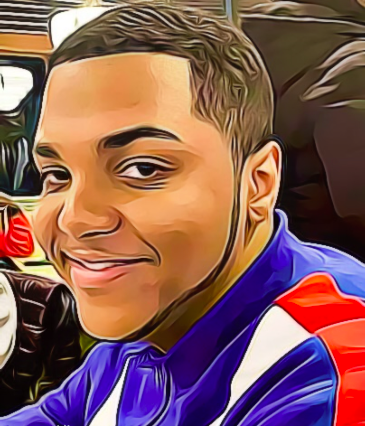

Sahan Jayalath is a New York-based multimedia artist, unifying the realms of visual art and computer science. Drawing from his experience as a Video Editor, Audio Engineer, and Unity game developer. Sahan creates intriguing audio-visual experiences that mesmerize and surprise. His works evoke a strange beauty, evoking a sense of wonderment and exploration. He defies the boundaries between digital and physical space by merging traditional mediums and cutting-edge software technologies. As a result, his works involve creating a truly unique experience. See his work on Github and his demo reels.
Paola Ayala
Co-Manager/Web Developer
Paola Ayala is a Brooklyn-based Web Developer and Game Designer. She has experience as a Lead Designer, Game Developer and Team Manager, making her a reliable and consistent collaborator. Her creative and innovative playing style keeps her teams motivated and engaged. Her advanced understanding of game design principles, development techniques, and team dynamics make her an effective leader on any project. With a passion for developing enjoyable and informative games, she is committed to creating unique and engaging experiences across a range of audiences. See her portfolio here and her work on GitHub.

Elijah Moyd
Programmer
Elijah Moyd is an emerging media designer, programmer, and game designer based in Brooklyn, New York. He is passionate about creating engaging experiences that merge development and storytelling. He loves to work in game design, as well as crafting interactive games and applications for storytellers. Elijah is always looking for ways to explore the growing possibilities of numerous ways to tell a story, as well as crafting experiences. He strives to use his programming expertise to create experiences full of heart, mystery, emotion, and intrigue with the goal of inspiring an appreciation for development and storytelling.
Shaian Khan
Programmer/Level Designer
My name is Shaian Khan. I am a video game developer & a filmmaker. I create video games & short films. Since my childhood I have
always had the curiosity to learn how to make good movies and video games that I
play and do all the creative stuff on the computer. I remember when I was 9 years
old, I got my first computer as a gift from my parents. It's true that I was so excited
for it but to be honest, back then I had no idea how to use a computer. I choose to
learn about computers on my own and since then, I have been trying to learn new
things on my computer every single day. One memory that I have in my mind
when I use Photoshop on my computer for the first time to edit my own picture. I
cropped my favorite superhero Spider-man's face and added my face on
Spider-man's body. This was my first creative work on my own as a kid. It took me
all day to figure out how to do this editing properly. This experience teaches me
that if you have the desire to learn something creative, you must try on your own
first. So, I can admit that my childhood curiosity and experience became my major
influence to work on short films and video games. I also believe that doing proper
research and taking essential academic courses are the plus points for enhancing
the creative skills. Currently, I am studying Emerging Media Technology at City
Tech. This major and all the creative stuff that I am learning in my academic career
are going to enhance my creative skills and will be playing a major part in my
professional career.
Tariq Hinds
Programmer
I have been programming in games for about 10 years in game design, game design theory, and programming. I have experience with various teams, time zones, and perspectives around the world. My main job is making sure everything between the creative teams and the logical teams (Programming and management) is smooth and all assets are in use properly.
Ling Mei Wu
Storyboard/Asset Collection Team
My name is Ling Mei Wu and I'm a visual artist based in New York City. My artwork is rooted in exploring the possibilities of collective narrative creation in the digital age. I work with Storyboard and 2D Asset collecting, where I specialize in collecting 2D Assets and bringing them into Photoshop for modification, Scene Level Designing, and Storyboarding. I bring these skills to bear when working with the Unity engine to create compelling gaming experiences. I'm constantly striving to create dynamic stories and visually appealing gaming experiences for all my projects. My passion for creating art has allowed me to connect with a variety of enthusiasts and digital art professionals, and it's something I'm excited to continue for years to come.
Aracely Garcia
Concept Art/Character Design
Aracely Garcia is an artist from Bronx, specializing in game art and concept art. Through her artwork, she strives to explore the intersection of digital media and traditional artistic expressions - creating surreal yet captivating art pieces. Her mission is to effectively communicate her vision of the world through immersive artwork by playing with color, shape, and geometry.
Karla Ramirez
Level Design
Karla is an aspiring creative technologist with design, coding, and problem-solving abilities. She spends most of her free time doodling about her daily life.
Jonathan Mahones
Character Design/Asset Collection
Johnathan Mahones, based out of Brooklyn, NY, is an electronic media and game designer who crafts vibrant fantasy worlds through concept art. His work alludes to the power of the heroic, featuring dynamic anime-inspired visuals that tell stories of courage and strength. Drawing inspiration from greats such as Hayao Miyazaki and Masamune Shirou, Mahones refers to his work as a blend of the traditional and modern, entwining the bright and energetic animation style of the East with the powerful dynamics and atmosphere of the West. Blending the classic with the contemporary, Mahones’s creations offer a timeless reminder to viewers of the power of the anime hero and their ability to inspire and captivate.
Seku Barris
Character Design/Sound Engineering
Hey! My name is Seku (Say-coo) and I am from Queens, New York. I am currently studying video game design at New York City College of Technology. However, I am highly proficient in audio and video editing as well. As for my role in terms of this project, I was responsible for gathering and editing the audio files. Audio is very important when it comes to creating an immersive experience for someone to enjoy. Bad visuals are tolerable to a degree, but bad audio is not and will cause someone to disengage with your content almost immediately. Additionally, I was tasked with researching information about the underwater sea life that is prevalent within New York waters and creating the video game trailer.
Kaitlyn Pollard
Sound Design
Hi my name is Kaitlyn, an emerging media technology student with a concentration in music technology, driven by my passion for the entertainment industry. My career goal is to become an audio engineer, with a primary focus on studio recording of music. However, my interests extend beyond music, I also aspire to work on movies or shows creating sound effects, recording lines for actors, and assisting with soundtracks. My interest and passion for sound design was able to be challenged by working on the class game project, where my partner and I successfully created an immersive audio experience for the game. Our roles included setting up sounds such as ambience, music for the beginning and ending, and creating sounds to depict the ocean life with animals. The dedication to my craft, and expertise in sound design, made me a great asset to my team in the process of designing this game.